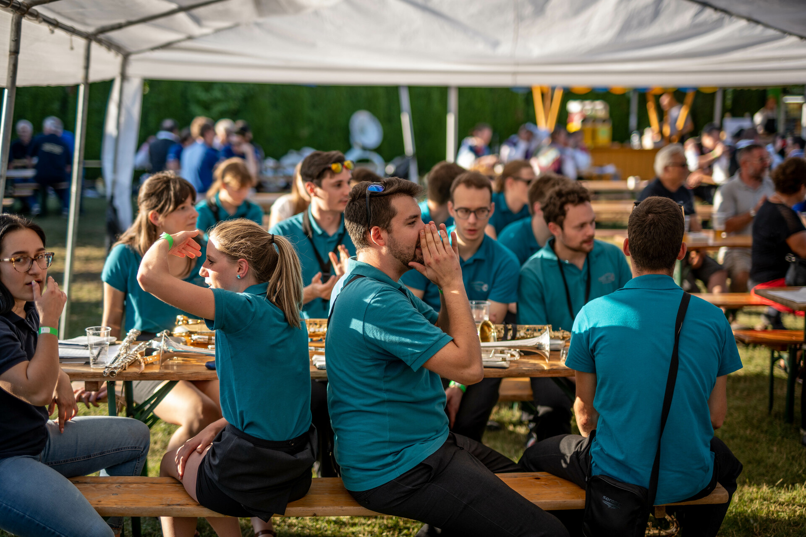

My life connected with music
Why did i start this blog?
I wanted to show you guys how my life surounded by music looks like.
Me waiting to go on stage, backstage at a concert:

I have concerts mostly on weekends. During the week I focus on my study, but on the weekends i practice my instruments with my band mates and I play a lot of gigs that generate some extra money for me.